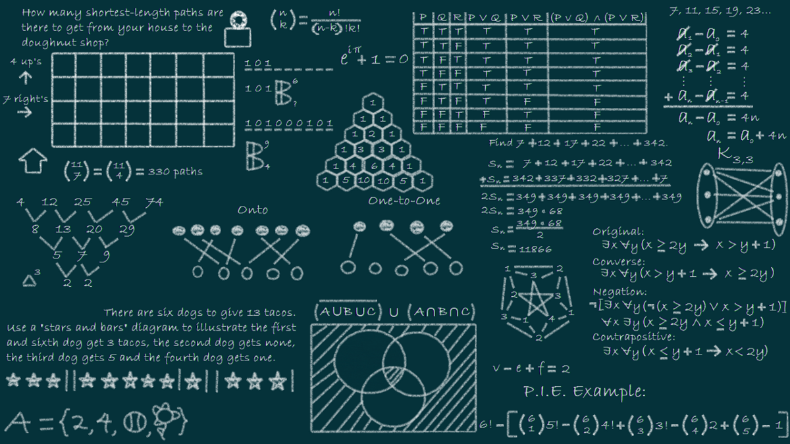

Las estructuras de datos es una rama de las ciencias de la computación que estudia y aplica diferentes formas de organizar información dentro de una aplicación, entre las diferentes estructuras de datos podemos encontrar las siguientes:

¡Recuerda!
Las estructuras de datos es una forma de
manejar grandes cantidades de datos. Los diferentes tipos de
datos que encontramos son:
1.- Arreglos
2.- Pilas
3.- Colas
4.- Árboles Binarios
5.- Listas Enlazadas
Arreglos
Pilas
Colas
Árboles Binarios
Listas Enlazadas
Arreglos: Alamacenan múltiples datos en una sola variable.
Pilas: Es una lista ordenada o estructura permite almacenar y recuperar datos, siendo el modo de acceso a sus elementos de tipo LIFO (del inglés Last In, First Out, «último en entrar, primero en salir»), es decir que, solamente pueden eliminar o insertar en la cima de la lista.
Colas: caracterizada por ser una secuencia de elementos en la que la operación de inserción push se realiza por un extremo y la operación de extracción pull por el otro. Además, permite emular el comportamiento de una fila o cola de la vida real.
Arboles Binarios: Está compuesta por nodos, tienen tres partes, El valor que contiene el nodo y dos nodos hijos (izquierdo y derecho).
Listas Enlazadas: Se componen de nodos que tienen dos atributos (datos y enlace) y consiste en que la secuencia de nodos, guardará campos de datos arbitrarios y una o dos referencias, enlaces o punteros al nodo anterior o posterior.